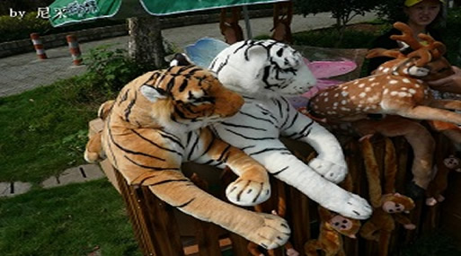

2011宁波旅游节新闻宣传成绩斐然

2011宁波旅游节的新闻报道工作围绕“让旅游成为生活方式，让休闲融入幸福指数”主题，以开幕式的旅游惠民和黄金周假期、闭幕式的旅游事件营销颁奖典礼和专家座谈会为两大宣传节点，注重新闻策划，突出媒体特性，着重大稿、好稿、专版和系列报道，报道数量多、新闻体裁广、报道内容深、报道形式新，营造了良好的新闻舆论氛围。除了本地媒体外，今年加强了在全国性媒体的宣传力度，中央电视台、《环球时报》、《南风窗》等重要媒体也进行了报道。
平面媒体：据不完全统计，2011宁波旅游节在各类平面媒体共发稿160篇。其中，深度专题报道专版20版，发表于头版的宣传稿件22篇。《环球时报》作了《旅游营销：乱花钱与金点子》深度报道；新锐新闻杂志《南风窗》作了《浙江旅游营销以“事”造“市”》的资讯报道；《中国旅游报》分别对开幕式、旅游事件营销颁奖评选、旅游节新闻综述进行报道；《中国文化报》作了《旅游事件营销需强化创意》的热点报道，《经济观察报》对旅游营销事件评选作了跟踪宣传和专版报道。《江南游报》、《旅游时报》作为旅游报，进行了深度、连续报道。《宁波日报》、《现代金报》、《都市快报》、《钱江晚报》、《宁波晚报》、《东南商报》等媒体也深入挖掘题材，开展多形式的宣传。
网络媒体：本届旅游节，网易对闭幕式作了现场网络直播、中国宁波网对开幕式和闭幕式作了现场直播，并举行“旅游达人”评选；新浪、搜狐、腾讯、中国网、新华网、人民网、凤凰网、浙江在线等各类主流网站对旅游节活动纷纷进行了刊登、转载。截止2011年12月21日，搜索“2011宁波旅游节”，GOOGLE共有相关信息3530000条，是2010宁波旅游节的356000条的近10倍；百度有715000条，比2010宁波旅游节增加18%。
广电媒体：共播发88条，其中中央电视台中文国际频道1条；宁波电视台新闻频道20条，《阿拉旅游》栏目35条；浙江电视台影视频道《旅游指南》8条；浙江之声10条，并对闭幕式进行了现场直播；宁波电台23条。 此外，2011宁波旅游节还首次运用微博进行了领导微访谈、微博抢票、活动预报等宣传报道，扩大了新的受众群体。